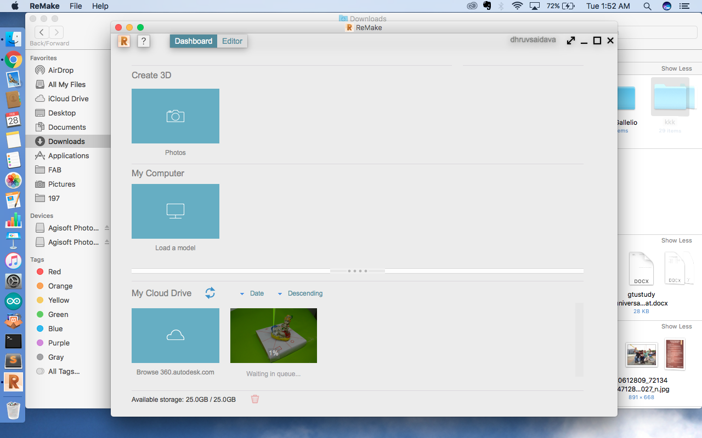
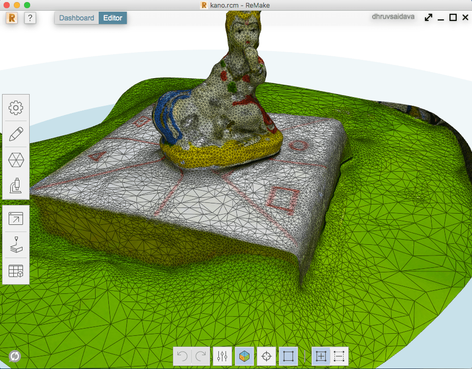

- Solid Work
- Rhino
- Autodesk Remake ( It now converting to ReCap Pro Not available for Mac)
- Fusion 360
Autodesk Remake
Step 1 Download ( Education Version) Link | 950 MB
Step 2 Setup
Autodesk Product require Login as this is Cloud based Product it store your photos to cloud and process them.
Select Photos and Upload.
this will upload photos to Autodesk Drive and Process
After Process it will show where to store output file.
Output extension is in Format

Step 5 Mesh Model

Project Done for 3D Printing
Problem Faced
-
Scanning from Phone ( object should be steady or Phone if few photos submitted wrong for remake it will spoil your other image ref. so check before uploading)